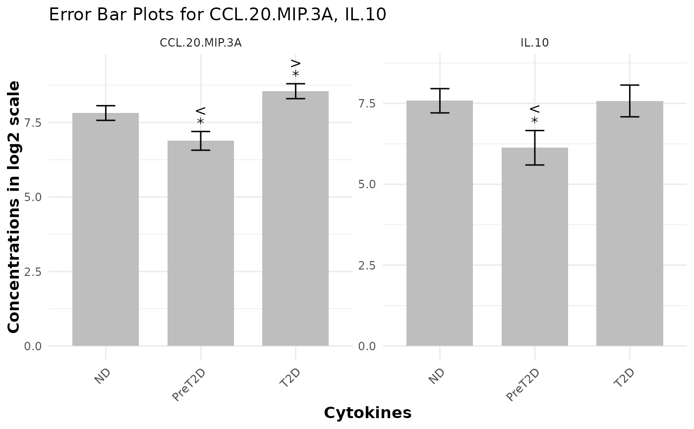
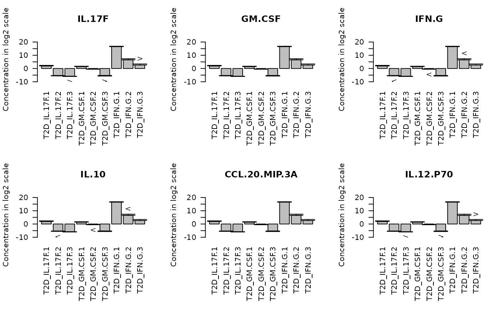

This function generates an error-bar plot to visually compare different groups against a designated baseline group. It displays the central tendency (mean or median) as a bar and overlays error bars to represent the data's spread (e.g., standard deviation, MAD, or standard error). The plot can also include p-value and effect size labels (based on SSMD), presented either as symbols or numeric values, to highlight significant differences and the magnitude of effects. When an output filename is provided the plot is saved to disk; otherwise the ggplot object is returned and drawn on the current graphics device.
Usage
cyt_errbp(
data,
group_col = NULL,
p_lab = TRUE,
es_lab = TRUE,
class_symbol = FALSE,
x_lab = "",
y_lab = "",
title = "",
stat = c("mean", "median"),
error = c("se", "sd", "mad", "ci"),
scale = c("none", "log2", "log10", "zscore", "custom"),
custom_fn = NULL,
method = c("auto", "ttest", "wilcox"),
p_adjust_method = NULL,
output_file = NULL,
label_size = 4
)Arguments
- data
A data frame containing at least one numeric column and a grouping column.
- group_col
Character string naming the column that defines groups. This column will be coerced to a factor.
- p_lab
Logical. If
TRUE(default) p‑value labels are displayed for group comparisons.- es_lab
Logical. If
TRUE(default) effect‑size labels are displayed.- class_symbol
Logical. If
TRUE, p‑value and effect‑size labels are encoded using symbols (e.g.,*,>>>). IfFALSE(default), numeric values are shown instead.- x_lab
Character string for the x-axis label. If empty a default label is generated.
- y_lab
Character string for the y-axis label. If empty a default label is generated.
- title
Character string for the plot title. If empty a default title is generated.
- stat
Character. Central tendency statistic to use. Choices are "mean" or "median"; default is "mean". Added to support non‑mean summaries.
- error
Character. Error measure visualized around the statistic. Options are "se" (standard error; default), "sd" (standard deviation), "mad" (median absolute deviation) or "ci" (approximate 95 % confidence interval).
- scale
Character controlling data transformation before analysis. Accepts "none" (default), "log2", "log10", "zscore" or "custom".
- custom_fn
A user‑supplied function applied to numeric columns when
scale = "custom".- method
Character controlling the statistical test used for pairwise comparisons. Options are "auto" (default; choose between t‑test and Wilcoxon based on a normality test), "ttest" or "wilcox".
- p_adjust_method
Character. If non‑NULL, specifies the method used by
p.adjust()to correct p‑values across all comparisons (e.g., "BH" for Benjamini–Hochberg). IfNULL(default) no adjustment is performed.- output_file
Optional file path. If provided, the plot is saved using
ggsave(); otherwise the plot is returned and automatically printed.- label_size
Numeric. Font size for p‑value and effect‑size labels. Default is 4.
Value
An error-bar plot (a ggplot object) is produced and optionally
saved as a PDF. If output_file is specified, the function returns
returns the ggplot object.
Examples
# Basic usage with default settings
df <- ExampleData1[, c("Group", "CCL-20/MIP-3A", "IL-10")]
cyt_errbp(df, group_col = "Group")

# Use mean and SD, log2 transform and show significance
cyt_errbp(df, group_col = "Group", stat = "mean", error = "sd",
scale = "log2", class_symbol = TRUE, method = "ttest")
